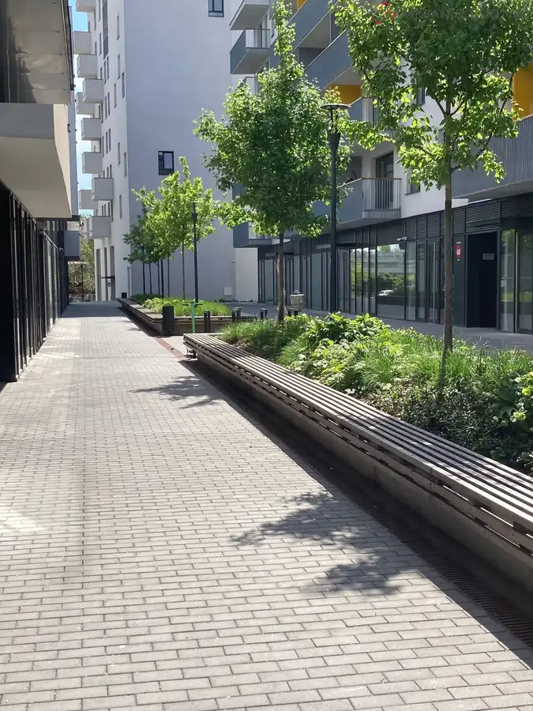
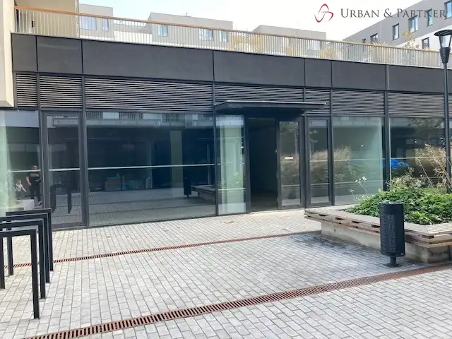
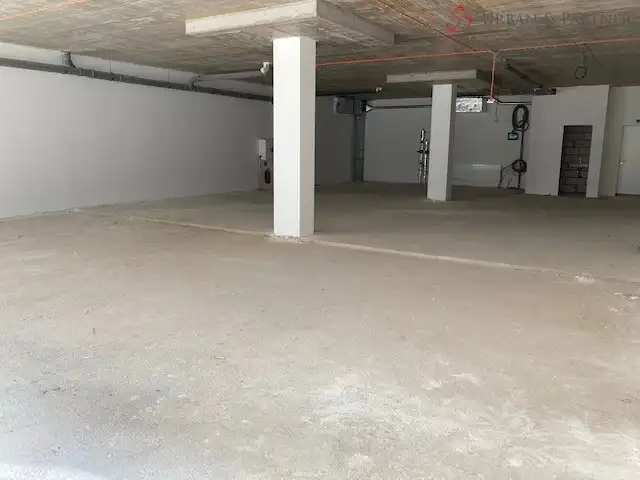
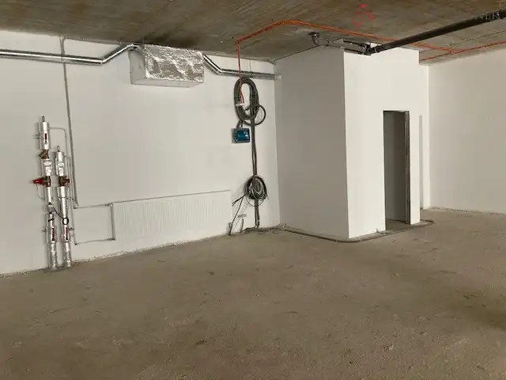
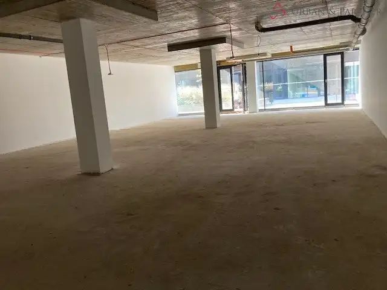
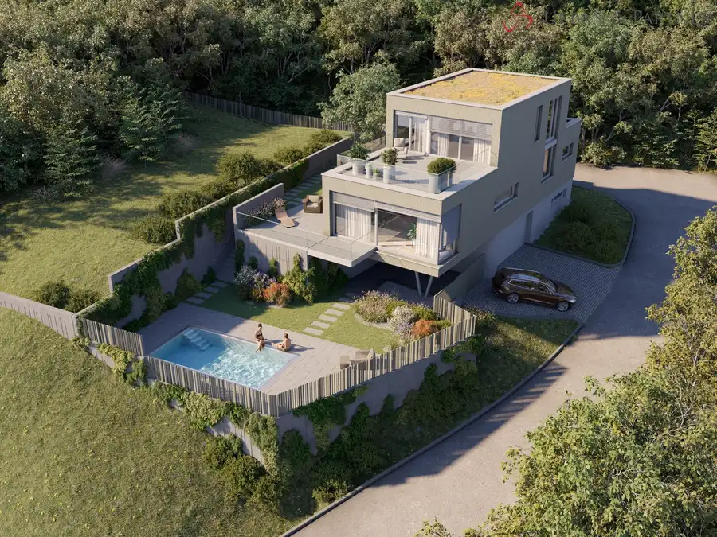
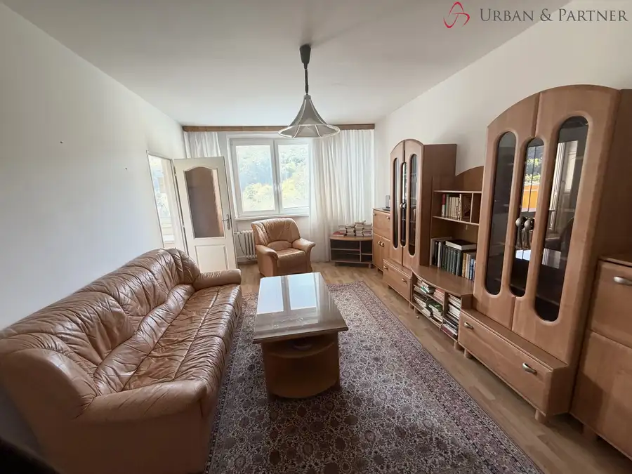
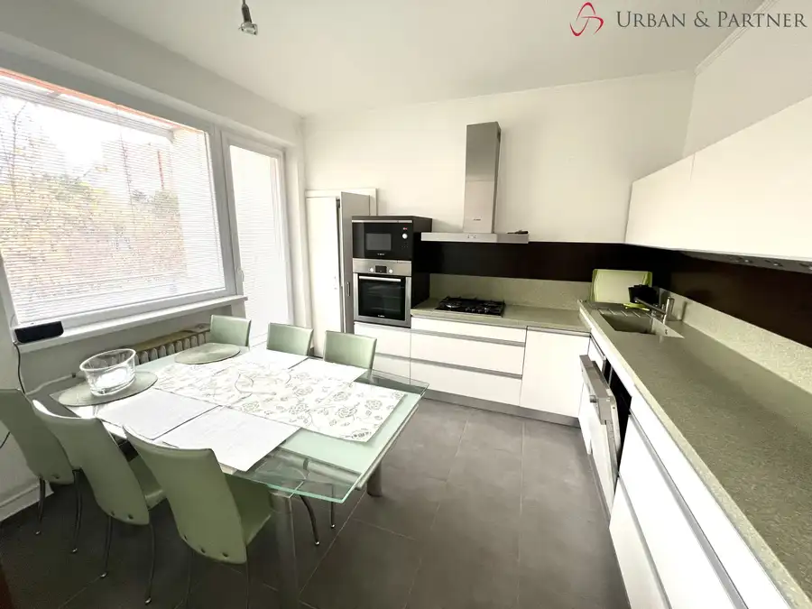

KOMERČNÝ PRIESTOR, 225m2, lokalita Mlynské Nivy
Ružinov, Bratislava





- Plocha225 m²
- StavNovostavba
- VlastníctvoOsobné
O nehnuteľnosti
URBAN&PARTNER ponúka exkluzívne na predaj komerčný (obchodný) priestor s výmerou 225 m2. Nachádza na pešej zóne projektu Jarabinky. Presklenné výklady sa tiahnu pozdĺž časti, ktorá je orientovaná do bulváru. Výhodou je aj zadný vstup z priestorov garážových státí. Ponúkame ho v stave holopriestor so samostatným WC a umývadlom, prípojnými bodmi vody, odpadu, elektrickej energie a vykurovania. Vzduchotechniku má v rámci budovy predpripravenú na prevádzku kaviarne, ale je vhodný aj na iné prevádzky. Treba ho dohotoviť podľa potrieb budúceho vlastníka. Svetlá výška priestoru je 3000mm. Parkovanie pre klientov je možné na platenom parkovisku v rámci objektu. V samotnom projekte Jarabinky sa nachádza cca 400 bytov a 25 obchodných priestorov. LOKALITA: Širšie centrum Bratislavy, oblasť Mlynské Nivy. Postupne sa táto zóna rozrastá o nové rezidenčné objekty, v blízkosti sa nachádzajú tiež business centrá ako BBC1+, centier BBC V, BBC I. Apollo BC II. Do pár rokov by mali pribudnúť ďalšie polyfunkčné objekty v tejto lokalite. Výborná dostupnosť z centra mesta aj na diaľničný obchvat. Cena : 2.500,00€/m2/ bez DPH. Ponúkame aj možnosť kúpy parkovacieho garážového státia. Ceny na vyžiadanie. Kontakt:Silvia Mojžišová, tel 0911 111 464email: mojzisova@urbanpartner.sk
Parametre
- Druh
- Obchodné priestory
- Dátum zverejnenia
- 23. 11. 2023
- Orientácia
- Západná
- Počet nadzemných podlaží
- 5
- Počet podzemných podlaží
- 2
- Stav nehnuteľnosti
- Novostavba
- Typ
- Predaj
- Vlastníctvo
- Osobné
- Úžitková plocha
- 225 m²
Kde to je


Mohlo by Vás zaujímať

DomNové 1 100 000 €Novostavba s výnimočným výhľadom a bazénom v Rači Rača, Bratislava 190 m²
BytNové 175 000 €2-izbový byt na začiatku Dúbravky s výhľadom na les Dúbravka, Bratislava 2-izbový44.45 m²10. podlažie
BytNové 334 000 €Veľkorysý 4 izbový byt s veľkou loggiou Karlova Ves, Bratislava 4-izbový106 m²4. podlažie